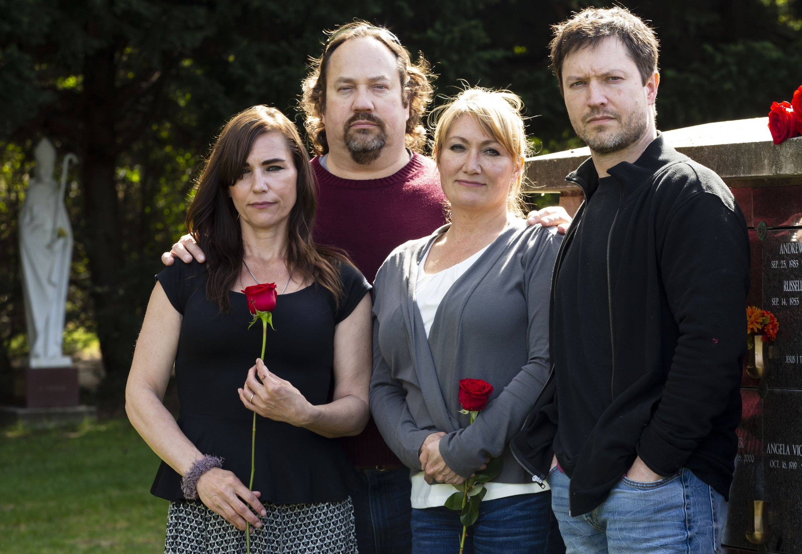

<%= t.renderMarkdown(archieml.text1.section1) %>
<%= t.include("partials/_ad.html", { type: "square" }) %>
<%= t.renderMarkdown(archieml.text1.section2) %>
<%= t.renderMarkdown(archieml.text1.section3) %>

“Washington’s severe shortage of inpatient beds for psychiatric patients put pressure state officials to add more capacity. Smokey Point Behavioral Hospital, a for-profit hospital in Marysville operated by US HealthVest, aimed to address the need. (Erika Schultz / The Seattle Times)
<%= t.renderMarkdown(archieml.text1.section4) %>
<%= t.include("_prerollVideo.html", { file: "christina_titlecard.mp4", id: "5845053912001", runtime: "1:40" }) %>
XXXXX (Erika Schultz / The Seattle Times)
<%= t.renderMarkdown(archieml.text1.section5) %>
<%= t.renderMarkdown(archieml.text1.section6) %>
<%= t.renderMarkdown(archieml.text1.section7) %>
<%= t.renderMarkdown(archieml.text1.section8) %>
<%= t.renderMarkdown(archieml.text1.section9) %>

Sarah Reum, 22, died by suicide Jan. 20, 2018, while she was a patient at US HealthVest’s Ridgeview Institute in Monroe, Georgia. Later that year, another patient there killed himself. In both cases, security video shows both patients, on suicide watch, were left alone for more than an hour when they were supposed to be checked every 15 minutes. (Courtesy of the Reum family)
<%= t.renderMarkdown(archieml.text1.section10) %>
At 4:04 p.m., a camera records Reum sitting in a chair in view of the nursing station, hands to her face, shoulders shaking. After two minutes, she gets up and walks down the hall to her room.
Fifteen minutes go by without anyone checking on her. Thirty minutes pass. Forty-five minutes. An hour.
At 5:12 p.m., a staffer enters her room, turns and runs down the hall to the nursing station, motioning for others to come.
A nurse and another staffer accompany her, in no apparent hurry, to Reum’s room.
More staff come running, followed by police and paramedics, but they are too late.
Shortly after 6 p.m., Sarah Reum was declared dead by suicide.
<%= t.renderMarkdown(archieml.text1.section11) %>
<%= t.renderMarkdown(archieml.text1.section12) %>

“Every day I worked at Smokey Point Behavioral Hospital, I was afraid for my life and the lives of my patients,” says nurse Christina Perry. (Erika Schultz / The Seattle Times)
<%= t.renderMarkdown(archieml.text1.section13) %>

AIn July 2017, Gov. Jay Inslee and Tulalip Tribes Chairwoman Marie Zackuse cut the ribbon at the Smokey Point Behavioral Hospital grand opening. Since 2012, the state has approved or expanded 10 private psychiatric hospitals, nine of which are for-profit. (Kalvin Valdillez / Tulalip News)
<%= t.renderMarkdown(archieml.text1.section14) %>
<%= t.renderMarkdown(archieml.text1.section15) %>
“Marjorie Erickson holds a photograph of her mother, Rosemary Torgesen, in Shoreline. “She was a strong, strong woman.” (Erika Schultz / The Seattle Times)
<%= t.renderMarkdown(archieml.text1.section16) %>
<%= t.include("partials/_ad.html", { type: "square" }) %>
<%= t.renderMarkdown(archieml.text1.section17) %>

“Four of Rosemary Torgesen’s seven children visit her grave in Shoreline. From left: Marjorie Erickson, Jeff Torgesen, Maurya Smith and Douglas Torgesen. (Erika Schultz / The Seattle Times)
<%= t.renderMarkdown(archieml.text1.section18) %>